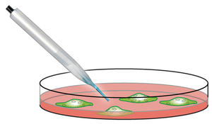

Para efeitos da nota atribuida à resolução de exercícios ao longo do semestre - Submeter até 23:59 de 29 de Maio
(o problema continuará depois disponível para submissão, mas sem contar para a nota)
[para perceber o contexto do problema deve ler o guião da aula #08]
O Aniceto tem um trabalho laboratorial de Biologia e precisa da tua ajuda. Ele está a cultivar pequenos micróbios numa caixa de Petri e necessita de os observar ao microscópio para perceber qual é a maior micróbio visível.
A caixa de Petri pode ser considerada como uma grelha 2D, ou seja uma matriz, onde em cada posição pode ou não existir uma célula. Duas células estão ligadas se forem adjacentes vertical, horizontal ou diagonalmente. Um micróbio é um conjunto de células ligadas. Por exemplo, a caixa de Petri seguinte tem exactamente três micróbios ('.' é uma posição vazia, '#' é uma posição com uma célula):
| # | # | . | # | . | . | . |
| . | # | # | # | . | . | . |
| . | . | . | . | . | # | # |
| . | # | . | . | . | # | # |
| # | . | # | . | . | . | . |
O tamanho de um micróbio é igual ao número de células que o constitui. Na figura de cima, os 3 micróbios têm tamanho 6 (o amarelo), 3 (o azul) e 4 (o verde). O maior micróbio é o de maior tamanho. Neste caso o maior micróbio é o amarelo.
Dado o estado de várias culturas de micróbios (indicados por uma matriz de células) a tua tarefa é descobrir qual o tamanho do maior micróbio em cada uma delas, ou seja, qual o tamanho do maior conjunto conexo de células em cada caso.
Na primeira linha do input vem um número N indicando o número de casos a considerar. Cada dos casos começa com dois números L e C indicando respectivamente o número de linhas e colunas da caixa de petri a considerar, seguido de L linhas, cada uma com C caracteres, indicando o conteúdo de cada posição: '.' para uma posição vazia e '#' para uma posição com célula.
O output deve ser constituido por N linhas, cada uma com o tamanho do maior micróbio do caso correspondente.
São garantidos os seguintes limites em todos os casos de teste que irão ser colocados ao programa:
| 1 ≤ N ≤ 20 | Número de casos | |
| 1 ≤ L ≤ 100 | Número de linhas da caixa de petri | |
| 1 ≤ C ≤ 100 | Número de colunas da caixa de petri |
2 5 7 ##.#... .###... .....## .#...## #.#.... 4 4 ##.# ...# #... ..#.
6 2
O primeiro caso de input é o da figura de cima. O segundo caso tem 4 micróbios: dois de tamanho 2 (verde e amarelo) e dois de tamanho 1 (azul e laranja). Desse modo, o maior micróbio tem tamanho 2:
| # | # | . | # |
| . | . | . | # |
| # | . | . | . |
| . | . | # | . |
Desenho e Análise de Algoritmos (CC2001)
DCC/FCUP - Faculdade de Ciências da Universidade do Porto